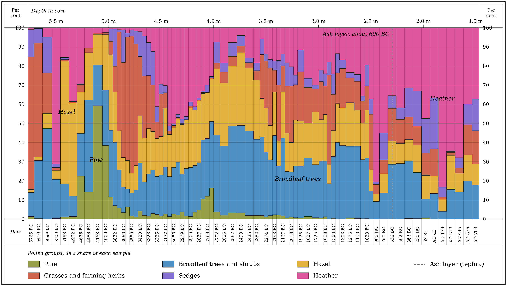

Three records the bog keeps
One record from each part of the archive: a nature record (pollen), an industrial record (coal soot) and a human record (buried farms). Each is drawn from Irish data.
Pollen at Glenulra, Céide Fields
Pollen falls on the bog every year and gets buried. Counting it layer by layer shows which plants grew nearby. Read the chart from left to right, from the deepest and oldest sample (5.5 m, about 6765 BC) to the shallowest (1.5 m, about AD 703).

Coal soot at Dead Island Bog
Tiny round soot particles form only when coal or oil is burned above 1000 °C. Their arrival in the peat marks when industry began to write itself into the bog.
At Dead Island Bog, Co. Londonderry, the soot record starts in the 1850s, rises fast in the 1950s and peaks around 1979. A thin layer of ash from Iceland's Hekla eruption of 1947 lies just beneath the fast rise.
The curve's shape is schematic. The source gives the three dated features but no measured values. Only the dots are sourced. To draw the real curve, trace the published figure or ask the author for the counts.
Show data table
| Year | Feature | Status |
|---|---|---|
| 1850s | Soot record starts | Sourced |
| 1947 | Hekla ash layer, just beneath the fast rise | Sourced |
| 1950s | Fast rise begins | Sourced |
| c. 1979 | Peak concentration | Sourced |
| After 1979 | Fall after the peak | Shape not given in source |
Pines over the buried fields, north Mayo
Neolithic farmers built a 12 km² system of stone-walled fields at Céide. Blanket bog grew over them. Later, pine trees grew on top of the new peat, and some even rooted on top of the buried walls.
Each dot is a pine stump, dated by radiocarbon. Its height shows how much peat had already formed over the old ground when the tree took root. The authors date the fields' abandonment under shallow peat to about 4,500 radiocarbon years ago.
Ages are uncalibrated radiocarbon years before present (BP), as published. They are not calendar years. Hollow dots: the height comes from the paper's text, not its table.